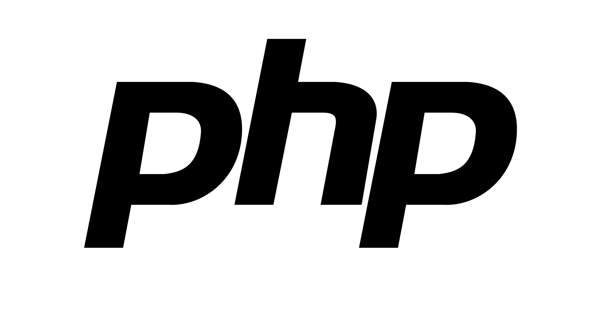

Maringá, PR
pedrofernandes21041999@gmail.com
Social
 /GabrielCalheiros
/GabrielCalheiros
 +55 (44) 9.8431-3510
+55 (44) 9.8431-3510
Habilidades
Inglês - Fluent
JavaScript - Intermediate
PHP - Intermediate
HTML - Advanced
CSS - Advanced
Bootstrap - Intermediate
Laravel - Beginner
Yii- Beginner
 React- Intermediate
React- Intermediate
Shell Script - Intermediate
InkScape - Advanced
GIMP - Intermediate
Education
Information Technology - FAETERJ, Petrópolis RJ (2014-2016)
Computer Science - UEM, Maringá PR (2020-Present)
Jr Front-End Developer
A technology enthusiast with skills in HTML, CSS, PHP, and JavaScript, as well as experience in frameworks such as Bootstrap, Laravel, and Yii. I also have knowledge in graphic design using open-source tools such as GIMP and Inkscape. I am familiar with GNU/Linux systems. Currently, I am studying Computer Science at UEM and have a technical degree in Information Technology from FAETERJ. I am passionate about personal projects and have already developed a wide variety of them. As a differential, I highlight my passion for personal projects, where I develop my creativity and improve my skills. I always seek to update myself and be attentive to market news, with the aim of growing professionally and contributing to the success of the company where I work. Additionally, I am fluent in English and currently studying Spanish.
Irmara and Maringá Licenças(04/2018 - 07/2021)
Experiences as Administrative Assistant and Graphic Designer
Before entering the technology field, I worked in two companies as an Administrative Assistant, where I had the opportunity to perform digital management and maintenance functions, as well as produce graphic materials such as flyers, business cards, and others. This experience provided me with a solid foundation in the corporate and bureaucratic world, as well as teaching me widely necessary management concepts for the development area.
Air Talent (07/2021 - 12/2022)
Development Internship
I completed a brief internship at Air Talent, where I had the opportunity to learn the fundamentals of web platform management. During this period, I had contact with technologies used internally in the company, such as React, WordPress, among others.
SpeedNow (01/2022 - 09/2022)
Computational Support Analyst
At SpeedNow, I worked as a Systems Analyst, where I was able to improve my skills in developing EAD platforms, using technologies such as Laravel and CodeIgniter3. In addition, I participated in editing the standard graphical interface of our application for different users. I was responsible for participating in meetings with clients, aiming to adjust and optimize the development process according to each one's needs. I also worked with databases and local APIs, as well as communication between them and clients. This experience was fundamental to the development of my career, as I was able to acquire technical and practical knowledge, as well as improve my communication and teamwork skills.
Paragon Software Solutions (10/2022 - 02/2023)
Graphic Designer and Front-end Developer
At Paragon Software Solutions, I was responsible for leading the development of the company's visual identity, including the design of the vector format logo and the creation of the website. In addition, I worked as a front-end developer, using technologies such as HTML, CSS, and JavaScript to create responsive and accessible interfaces. This experience allowed me to improve my skills in graphic design and web development, as well as develop a broader vision of the intersection between these areas.
IntermediatePersonal Projects and Social Links: